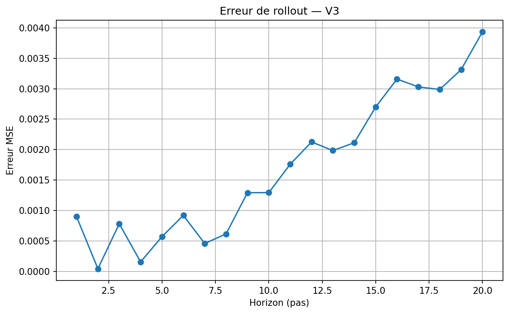

Acte 4
Les limites
Le modèle prédit bien. L'espace latent est structuré. Peut-il maintenant planifier — imaginer une suite d'actions pour atteindre un objectif ? La réponse est non. Et comprendre pourquoi est peut-être la leçon la plus intéressante du projet.
Ce qui fonctionne
Le rollout multi-step est stable
On commence par tester la capacité du modèle à simuler des séquences d'actions dans l'imaginaire — sans jamais revenir à la vraie grille. À partir d'un état initial encodé z₀, on applique répétitivement le prédicteur : z₁ = f(z₀, a₀), z₂ = f(z₁, a₁), … jusqu'à un horizon H. Puis on compare chaque zₜ prédit au vrai zₜ produit par l'encodeur.
Sur 20 horizons et 50 cas de test aléatoires, la même tendance se confirme : l'erreur croît graduellement, sans jamais exploser. Le modèle ne "s'emballe" pas — c'est une dérive lente, pas un effondrement.

Une erreur de rollout qui "explose" indiquerait que le modèle produit des représentations instables — chaque prédiction amplifie l'erreur précédente. Ce n'est pas ce qu'on observe. La dérive est bornée et prévisible, ce qui est la signature d'un modèle qui a bien compris la dynamique locale.
Ce qui échoue
Le planning nécessite de savoir où est la cible
Pour planifier, on a besoin d'une fonction de coût : une mesure qui dit "est-ce que l'état imaginé est proche du but ?" Dans l'espace latent, ça revient à trouver le vecteur latent du but, puis à minimiser la distance entre ce vecteur et le vecteur prédit à l'horizon H.
L'approche tentée : entraîner un décodeur de position — un petit réseau qui prédit les coordonnées (ligne, colonne) de la boîte à partir du vecteur latent. Si le décodeur est précis, on peut l'utiliser pour guider la recherche : "quelle séquence d'actions rapproche la boîte de la cible ?"
sur une grille de 10×10
trop imprécis pour guider un plan
Le cercle orange représente la zone d'incertitude du décodeur autour de la vraie position (point vert). On ne peut pas piloter un agent avec une boussole aussi floue.
Le décodeur de position a été entraîné sur 5 000 états aléatoires (split 80/20). Son erreur de validation est de 5.31 MSE, soit 2.3 cases d'écart en moyenne. Sur une grille de 8×8 cases jouables, c'est catastrophique : le décodeur confond des positions distantes de plusieurs cases. Il ne sait pas distinguer "la boîte est à côté de la cible" de "la boîte est à l'autre bout de la grille".
L'analyse
La tension fondamentale de JEPA
Ces résultats ne sont pas un accident d'implémentation. Ils révèlent une tension structurelle dans la façon dont le world model est entraîné.
Ce que l'objectif d'entraînement optimise
- Prédire zt+1 depuis zt et l'action
- Capturer la dynamique locale : que se passe-t-il au prochain pas ?
- Encoder ce qui est utile pour prédire
Ce que le planning requiert
- Savoir où est la boîte dans l'espace absolu
- Savoir où est la cible et ce que "atteindre" signifie
- Encoder ce qui est utile pour décider
Un modèle peut être excellent pour prédire le prochain état sans jamais apprendre à se repérer dans l'espace. Imaginons un humain qui apprend à conduire les yeux fermés en mémorisant les vibrations du volant : il devient expert pour anticiper la prochaine vibration, mais il ne saurait pas vous dire où il se trouve sur la carte.
C'est exactement ce que fait ce world model. Il a appris la physique des transitions. Mais personne ne lui a demandé de retenir les coordonnées. La loss de prédiction latente n'exige pas que le vecteur z encode la position absolue — seulement qu'il encode ce qui est nécessaire pour prédire le z suivant.
Le papier LeWM s'attaque à ce problème à plus grande échelle, avec des environnements robotiques réels. Leur solution : un espace latent bien plus grand (ViT, 192 dimensions), un prédicteur transformer, et une régularisation SIGReg qui force les représentations à suivre une distribution gaussienne isotrope. Résultat : le planning fonctionne — mais il nécessite une architecture et une régularisation significativement plus sophistiquées que les nôtres.
Perspectives
Ce qu'il faudrait changer
Le planning n'est pas impossible en principe — il faut simplement changer ce qu'on demande au modèle d'apprendre. Deux pistes identifiées :
Ajouter une supervision de position à l'entraînement
Ajouter un terme de loss auxiliaire qui force le vecteur latent à encoder explicitement la position de la boîte et de la cible. Le modèle devra apprendre à "noter" ces coordonnées dans son vecteur — pas seulement ce qui est utile pour prédire, mais aussi ce qui est utile pour se repérer. C'est la direction des "auxiliary tasks" en RL et en SSL.
Augmenter massivement le dataset
Le dataset actuel (20 000 transitions) couvre bien les règles physiques mais représente une fraction des configurations possibles. Avec des millions de transitions couvrant uniformément toutes les positions et tous les déplacements, le modèle serait forcé de développer une représentation plus fine des positions absolues — par nécessité statistique.
Changer d'architecture encodeur
Le problème n'est pas le manque de capacité : décrire un état GridWorld ne requiert que 6 nombres (positions de l'agent, de la boîte, de la cible), et 32 dimensions sont bien suffisantes en théorie. Le PC1 = 92% ne dit pas que l'espace est trop petit — il dit que le modèle n'a besoin que d'une seule direction pour bien prédire le pas suivant. Avec un encodeur plus expressif (ViT, attention) et une régularisation plus forte (comme SIGReg), on pourrait forcer une utilisation plus équilibrée de l'espace latent, et éviter que tout se concentre sur un seul axe.
Conclusion
Ce que ce projet montre, vraiment
Ce projet n'est pas une démonstration de succès. C'est une exploration honnête d'une idée — et les endroits où elle accroche sont au moins aussi instructifs que les endroits où elle fonctionne.
Le world model fonctionne au sens où il a appris quelque chose de réel sur la physique du monde simulé. Il peut prédire, il peut simuler, son espace latent est structuré. C'est déjà remarquable pour un modèle de 15 000 paramètres entraîné sans aucune étiquette humaine, sans récompense, sans supervision.
Mais il échoue là où ça compte pour l'autonomie : il ne comprend pas ce qu'est un objectif. Il ne sait pas représenter "la boîte doit rejoindre la cible" parce que personne ne le lui a demandé. La loss de prédiction est aveugle aux buts.
Ce projet suit précisément l'approche que LeCun défend comme alternative aux LLMs : apprendre un modèle du monde en espace latent, sans reconstruction pixel, pour pouvoir planifier. Les résultats montrent que l'idée tient — mais que l'objectif d'entraînement seul ne suffit pas à obtenir une représentation orientée vers l'action. Il faut contraindre explicitement ce que le modèle doit retenir.
En d'autres termes : construire un world model ne garantit pas qu'il encode ce dont on a besoin pour planifier. C'est la tension que le papier LeWM résout avec une architecture plus puissante — et que ce projet illustre, à petite échelle, de façon tangible et mesurable.